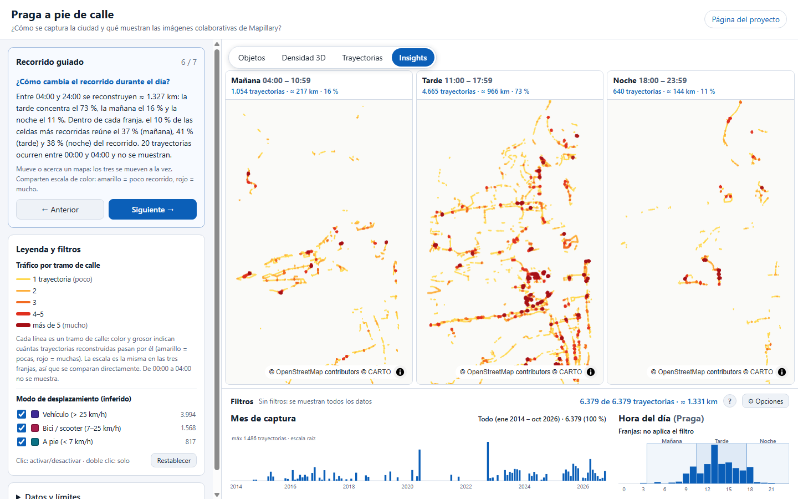

Problema y audiencia
Usamos los datos colaborativos como si describieran la ciudad, pero describen sobre todo a quien la captura.
- Cada dato existe porque alguien pasó con una cámara.
- Audiencia: analistas y estudiantes de datos geoespaciales y de movilidad urbana.
- Pregunta: ¿puedo confiar en estos datos para mi análisis?
Datos
39.564
detecciones de objetos6.379
trayectorias76.225
imágenesMapillary API v4 (CC BY-SA) · oeste de Praga, ~4,6 × 8,9 km · 2014–2026 · 277 clases de objeto agrupadas en 7 categorías.
De la API a la pantalla
1 · Extraercuadrícula de 0,005° · objetos e imágenes
2 · Limpiarfechas en hora de Praga · categorías
3 · Reconstruirtramos ≤15 s y ≤60 m · ajuste a la red (OSRM)
4 · Derivarmuestras cada ~40 m · CSV y JSON (≈ 3 MB)
5 · Mostrardeck.gl + MapLibre · series enlazadas
La aplicación: cuatro vistas, un mismo filtro

Recorrido guiado y leyenda-filtro (izquierda) · mapa · series de tiempo enlazadas (abajo).

Trayectorias con reloj de 24 h

Densidad de recorrido 3D

Insights: tráfico por tramo de calle en mañana, tarde y noche

Objetos: 3 categorías mayores
Interacciones clave: series con selección por arrastre escala raíz / log / lineal leyenda = filtro cámaras sincronizadas recorrido guiado de 7 pasos
Hallazgos
26 %
de las detecciones son de un solo mes (octubre de 2022); los 5 meses mayores suman el 52 %41 %
del recorrido reconstruido cae en el 10 % de las celdas de ~100 m73 %
del recorrido ocurre de 11:00 a 17:59 (mañana 16 %, noche 11 %)71 %
de los objetos son señalización, alumbrado y comercio; el mobiliario urbano solo el 6 %Conclusión: estos datos describen mejor a quien captura que a la ciudad capturada. Antes de leer una ciudad en datos colaborativos hay que preguntar ¿quién, cuándo y con qué?
Límites
- Solo 2 de 5 lotes de detecciones descargados: zona parcial.
- Las trayectorias se reconstruyen: tramos de ~2 s; el modo de transporte es una inferencia débil.
- Detecciones automáticas, no un censo.
- El 3D no incluye edificios: la altura solo codifica el valor.
Acceso
jeffhq.github.io/ NewMapillaryVisualization
Aplicación, página del proyecto, paper, presentación y videos.
Código y datos: github.com/jeffHQ/NewMapillaryVisualization